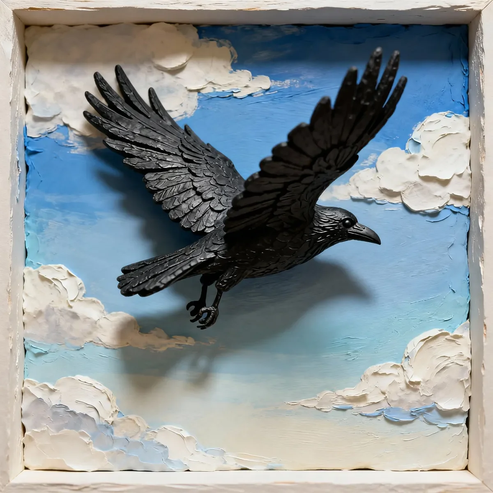

23층 위에서 바라보는 자리에서, 나는 또 다른 형제가 유리벽을 열린 하늘로 착각하는 것을 지켜봤다. 충돌 소리는 거의 나지 않았다 - 그저 아래에 있는 인간들이 알아채지 못할 정도의 부드러운 ‘퍽’ 소리뿐이었다. 그들은 결코 위를 올려다보지 않았다, 우리의 영역에 빛나는 함정을 만든 이 땅에 묶인 생물들은.
[From my perch above the twenty-third floor, I watched another brother mistake a glass wall for open sky. The impact barely made a sound – just a soft thud that humans below didn’t notice. They never looked up, these ground-bound creatures who built their shining traps in our domain.]
어린 너덜날개는 이런 교훈을 배울 필요가 있었다. 그는 내 옆에 앉아, 그를 살릴 수도 있고 죽일 수도 있는 익숙한 호기심으로 머리를 기울였다. “봐,” 나는 부드럽게 딱딱거렸다. “아침 햇빛이 죽음의 유리에 어떻게 반사되는지 보이니? 그때가 가장 위험한 때야.”
[Young Ragged-Wing needed to learn these lessons. He perched beside me, his head tilting with that familiar curiosity that could either keep him alive or get him killed. “Watch,” I clicked softly. “See how the death-glass reflects morning light? That’s when it’s most dangerous.”]
우리는 몇 주 동안 같은 영역에서 활동해왔다 - 인간 푸드코트와 노인들이 빵을 뿌리는 공원 사이의 구간이었다. 너덜날개는 폭풍이 그의 가족 둥지를 앗아간 후 내게 합류했는데, 떨어지면서 왼쪽 날개 끝이 영구적으로 구부러졌다. 대부분은 그를 자연에 맡겼을 테지만, 그의 도전적인 깡충거림에서 나는 나 자신을 떠올렸다. 아마도 그가 자신의 두 배 크기의 다람쥐에게 버려진 베이글을 위해 도전했던 방식이나, 내가 가르치기도 전에 신호등 타이밍을 파악했던 방식 때문이었을 것이다.
[We’d been working the same territory for weeks – the stretch between the human food courts and the park where elderly humans scattered bread. Ragged-Wing had joined me after the storm took his family’s nest, the tip of his left wing permanently bent from the fall. Most would’ve left him to the elements, but something in his defiant hop had reminded me of myself. Perhaps it was the way he’d challenged a squirrel twice his size for a forgotten bagel, or how he’d figured out the timing of the traffic lights before I could teach him.]
“아래에 움직임이 있어,” 너덜날개가 경고했다, 그의 부리는 하늘 세척 플랫폼을 굴리는 유지보수 팀을 가리키고 있었다.
[“Movement below,” Ragged-Wing alerted, his beak pointing toward the maintenance crew rolling out their sky-washing platforms.]
“좋은 눈이야. 이동할 시간이다.” 나는 먼저 날아올라 건물들 사이로 흐르는 아침 상승기류를 타는 적절한 각도를 시범 보였다. 도시의 금속 뼈대는 독특한 바람 패턴을 만들어냈다 - 충분히 오래 연구하면 예측 가능한 패턴이었다. 우리는 왼쪽으로 방향을 틀어 지난 봄 우리 무리에서 세 명을 앗아간 보라색 유리창을 피했다.
[“Good eyes. Time to shift.” I launched first, demonstrating the proper angle to catch the morning thermal that rolled between buildings. The city’s metal bones created unique wind patterns – predictable if you studied them long enough. We banked left, avoiding the purple-tinted windows that had claimed three of our murder last spring.]
헬리콥터가 머리 위로 천둥처럼 지나가, 우리는 빠르게 고도를 낮춰야 했다. 너덜날개는 내 리드를 따라 난기류와 싸우기보다는 그 속으로 몸을 숨겼다. 영리한 녀석이었다. 우리 아래로는 아침 출근 시간이 자체적인 리듬을 만들어냈다 - 브레이크 소리, 참을성 없는 경적 소리, 보행자 신호의 꾸준한 맥박. 우리는 고대 까마귀들이 한때 날씨 패턴을 읽었던 것처럼 이런 도시의 리듬을 읽는 법을 배웠다.
[A helicopter thundered overhead, forcing us to drop altitude quickly. Ragged-Wing followed my lead, tucking into the turbulence rather than fighting it. Smart kid. Below us, the morning rush hour created its own rhythm – the screech of brakes, the impatient horns, the steady pulse of pedestrian signals. We’d learned to read these urban rhythms like ancient crows once read weather patterns.]
하루는 일련의 계산된 움직임으로 펼쳐졌다. 우리는 공원의 영공을 차지한 영역을 지키는 붉은꼬리 매를 피하고, 가장 독성이 적은 쓰레기통에서 조심스럽게 먹이를 찾았으며, 나는 너덜날개에게 버려진 음식과 미끼 트랩의 차이점을 구별하는 방법을 보여주었다. 인간들은 그들의 독약에 더 교묘해졌다.
[The day unfolded in a series of calculated maneuvers. We dodged the territorial red-tail who’d claimed the park’s airspace, scavenged carefully from the least toxic dumpsters, and I showed Ragged-Wing how to spot the difference between abandoned food and baited traps. The humans had gotten cleverer with their poisons.]
“쓴 아몬드 냄새가 나는 것은 절대 먹지 마,” 나는 경고하며 의심스러운 씨앗 더미를 밀어냈다. “그리고 4층 난간의 고양이들을 조심해 - 그들은 에어컨 유닛 뒤에서 기다리는 법을 배웠어.” 나는 수년 전, 그들의 인내심을 이해하기도 전에 그 고양이들에게 내 첫 짝을 잃었다.
[“Never eat anything that smells of bitter almonds,” I warned, nudging away a suspicious pile of seeds. “And watch the cats on the fourth-floor ledges – they’ve learned to wait behind the air units.” I’d lost my first mate to those cats, years ago, before I understood their patience.]
오래된 시계탑 근처에서, 우리는 예상치 못한 진수성찬을 발견했다 - 떨어지면서 터져버린 테이크아웃 용기였다. “기다려,” 너덜날개가 내려가려고 할 때 내가 명령했다. “패턴을 지켜봐.” 세 마리의 비둘기가 이미 모여 긴장하며 쪼아대고 있었다. 우리는 네 번째, 그리고 다섯 번째 비둘기가 접근하는 것을 지켜봤다. 어느 것도 고통의 징후를 보이지 않았다. “이제 안전해,” 나는 고개를 끄덕였다.
[Near the old clock tower, we found an unexpected feast – a dropped takeout container that had burst open on impact. “Wait,” I commanded as Ragged-Wing prepared to dive. “Watch the pattern.” Three pigeons had already gathered, pecking nervously. We observed as a fourth approached, then a fifth. None showed signs of distress. “Now it’s safe,” I nodded.]
정오쯤, 우리는 무리와 나눌 충분한 음식을 확보했지만, 너덜날개의 관심은 계속해서 높은 홈통에 끼어 있는 반짝이는 물체로 향했다. 그의 까치 본능이 드러나고 있었다. 햇빛이 금속성 물체의 가장자리를 비추고 있었다 - 아마도 잃어버린 귀걸이나 클립이었을 것이다. 이런 인간의 장신구들은 나에게는 가치가 없었지만, 나는 젊은 시절의 그 매력을 기억했다.
[By midday, we’d secured enough food to share with the murder, but Ragged-Wing’s attention kept drifting to a glittering object wedged in a high gutter. The magpie in him was showing. Sunshine caught the edge of something metallic – perhaps a lost earring or a paperclip. These human trinkets held no value for me, but I remembered the attraction from my younger days.]
“그건 가치가 없어,” 내가 경고했지만, 그는 이미 그것을 향해 활공하고 있었다. 유지보수 플랫폼이 갑자기 건물 모퉁이를 돌아 움직였고, 케이블이 삐걱거렸다. 너덜날개는 급격히 방향을 틀었고, 그의 손상된 날개가 균형을 무너뜨렸다. 잠시 동안, 그는 유리 외벽을 향해 떨어졌다.
[“It’s not worth it,” I warned, but he was already gliding toward it. The maintenance platform swung suddenly around the building’s corner, its cables whining. Ragged-Wing banked sharply, his damaged wing throwing him off balance. For a moment, he tumbled toward the glass facade.]
내 심장이 멎는 것 같았다 - 또 다른 형제, 또 다른 죽음의 유리 비극. 하지만 너덜날개는 몸을 비틀어 그의 부상을 이용해 반사 표면에서 벗어났다. 그는 장식용 난간에 세게 착지했지만, 숨을 헐떡이며 살아있었다. 생존의 급박함 속에서 반짝이는 물체는 잊혀졌다.
[My heart seized – another brother, another death-glass tragedy. But Ragged-Wing twisted, using his injury to spin away from the reflecting surface. He landed hard on a decorative ledge, panting but alive. The shiny object forgotten in the rush of survival.]
“현명한 움직임이었어,” 내가 그의 옆에 착지하며 칭찬했다. “약점을 강점으로 사용하다니. 넌 여기서 살아남을 거야.” 우리 위로, 우리 무리의 까마귀 한 쌍이 다가오는 폭풍 구름에 대한 경고를 외쳤다. 기압이 변했다; 나는 내 속이 빈 뼈에서 그것을 느낄 수 있었다.
[“Smart move,” I praised, landing beside him. “Using your weakness as strength. You’ll survive here yet.” Above us, a pair of crows from our murder called out – a warning about approaching storm clouds. The air pressure had shifted; I could feel it in my hollow bones.]
그는 부끄러워하면서도 자랑스럽게 깃털을 다듬었다. 우리 아래에서는 창문 닦이가 플랫폼이 부드럽게 흔들리는 가운데 우리를 응시했다. 우리도 그를 응시했다. 가끔 나는 인간들이 그들이 한 일을 이해하는지 궁금했다 - 우리의 세계를 이런 위험과 기회의 미로로 바꿔놓은 것을. 아마도 그렇지 않을 것이다. 그들은 알아차릴 만큼 오래 위를 쳐다보는 경우가 거의 없었다.
[He preened, embarrassed but proud. Below us, a window washer stared, his platform swaying gently. We stared back. Sometimes I wondered if humans understood what they’d done – turning our world into this maze of hazards and opportunities. Probably not. They rarely looked up long enough to notice.]
“가자,” 나는 너덜날개를 툭 쳤다. “우리가 살펴봐야 할 새 건설 현장이 있어. 파괴가 있는 곳에는 항상 음식이 있지.” 인간들은 오래된 벽돌 건물을 철거하고 있었다, 우리 종족의 여러 세대를 보호해 온 적절한 난간과 구석이 있는 종류의 건물이었다. 그들은 이것을 진보라고 불렀다.
[“Come on,” I nudged Ragged-Wing. “There’s a new construction site we should survey. Where there’s destruction, there’s always food.” The humans were demolishing an old brick building, the kind with proper ledges and nooks that had sheltered generations of our kind. Progress, they called it.]
우리는 함께 날아올랐고, 우리의 콘크리트 숲을 통해 흐르는 보이지 않는 강처럼 도시의 기류를 타고 갔다. 번개가 우리 뒤의 구름을 비추었고, 잠시 동안 우리의 그림자는 마천루의 표면에 거대하게 드리워졌다 - 다가오는 폭풍을 배경으로 한 두 개의 어두운 실루엣.
[We took off together, riding the urban currents that flowed like invisible rivers through our concrete forest. A flash of lightning illuminated the clouds behind us, and for a moment, our shadows stretched giant across the face of a skyscraper – two dark silhouettes against the approaching storm.]
우리 뒤에서, 죽음의 유리는 계속해서 거짓 하늘을 조용히 반사하며 다음 희생자를 기다리고 있었다. 하지만 우리는 아니었다. 오늘은 아니었다. 이 강철과 유리의 수직 정글에서, 대대로 전해진 지식은 삶과 죽음의 차이였다. 그리고 너덜날개는 빠르게 배우고 있었다.
[Behind us, the death-glass continued its silent reflection of false sky, waiting for its next victim. But not us. Not today. In this vertical jungle of steel and glass, knowledge passed down was the difference between life and death. And Ragged-Wing was learning fast.]
우리가 높이 날 때, 태양이 그의 구부러진 날개를 비추어 마치 전투의 흉터처럼 빛나게 했다.
[The sun caught his bent wing as we soared, making it shine like a battle scar.]